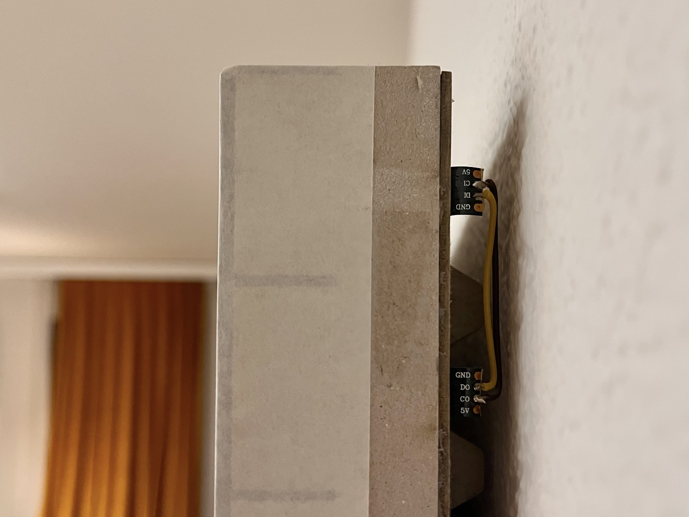
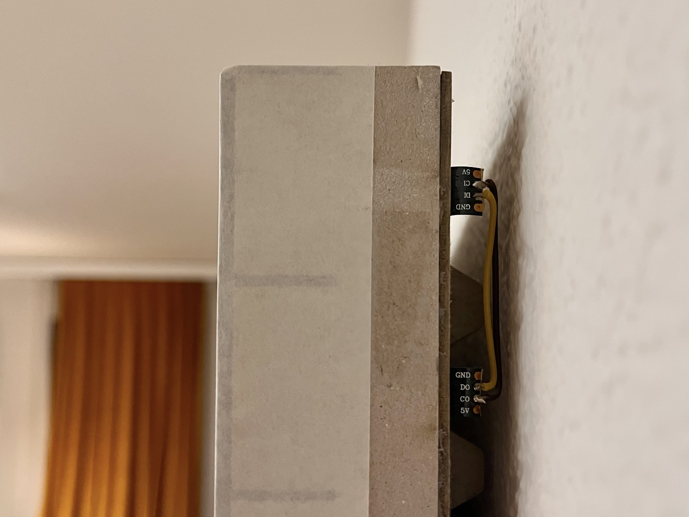

Ausgewählte Arbeiten / Matthias Roggo
A Window
2024
Lichtobjekt
Karton gelasert, Seidenpapier, LEDs


 

Was macht ein Fenster zu einem Fenster? Vielleicht braucht es gar kein Loch in der Wand, sondern bloss eine kühle Lichtquelle und ein ein Gefühl von Bewegung im Augenwinkel.
Format und Auflösung beziehen sich auf die Kinderstube der Computergrafik. Während die räumliche Auflösung grob und unscharf bleibt, werden hier aber alle Farben und Bildraten möglich. Das Resultat: Der Eindruck einer Vergangenheit, die so nie stattgefunden hat.
- Videostream via WebSocket
- 80 Frames pro Sekunde, Latenz unter 20ms
- React-Webapp auf Laptop als Medienquelle
Köbi
2019
Motorisierte Fadenspulen
Schrittmotoren, 3D-Druck, ESP32

Wie lassen sich verschiedene Räume flexibel bespielen?
Lasst uns im Hintergrund die Fäden ziehen.
Dieser Prototyp bietet per Tablet die Möglichkeit, sechs Fadenspulen punktgenau anzusteuern, um so vor Ort die Möglichkeiten von Raum und Materialien zu erkunden.
- Ansteuerung per Tablet mittels Open Sound Control (OSC)
- Feedback zu Position und Geschwindigkeit auf's Tablet
- Unabhängige Kalibrierung der Achsenlängen
Remonteur
2017
Werkzeugkasten zur Entwicklung einer Videoarbeit
Electron-App, Python, KI-Modelle
Was wird möglich, ...
Tooling für eine 2-Kanal-Videoinstallation von Stiller (Verena Looser / Melina Weissenborn).
"Landscape of Abscence" (Kennwort: Absence) wurde
2017 –
2019 auf verschiedenen Kurz-
und Experimentalfilmfestivals gezeigt.
- Datenbank mit 50.000 Dialogfragmenten aus 30 Filmen
- Gender-Estimation der Sprecher*innen durch KI
- Electron-App zum Durchsuchen, Anhören und Re-arrangieren der Dialoge
- Export als Davinci-Projektdatei